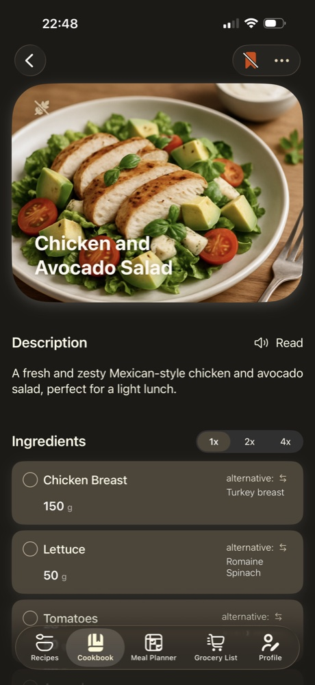
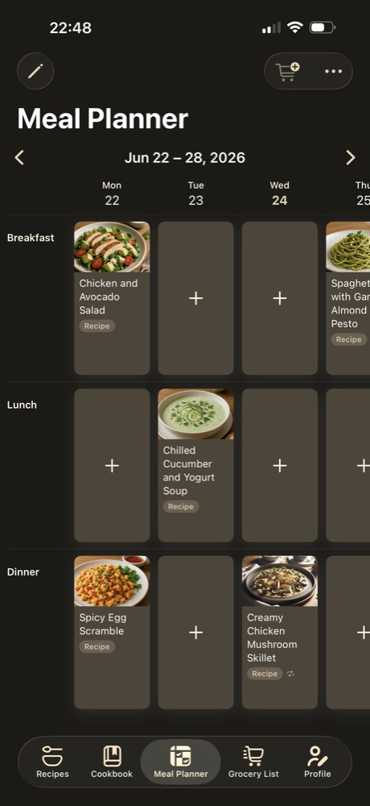

ReciPics
ReciPics
ReciPics is an iPhone app with a weekly meal planner: put recipes from your cookbook on breakfast, lunch or dinner for each day of the week. A tap on the cart button adds the ingredients of the planned recipes to your grocery list, and you can share the week as a PDF.
View on the App Store


Real screens from the app.
The Meal Planner tab shows one week as a grid: the days run across, your meals run down. Move between weeks with the arrows and tap an empty cell to plan that meal.
Breakfast, lunch and dinner are set up for you. Under “Manage Meal Types” you can add your own, for example a snack, rename them or change their order, up to five rows in total.
Only planned recipes add ingredients; manual entries don't. Each planned meal adds its own ingredients with the amounts written in its recipe. Ingredients are not combined: if two planned meals need onions, onions appear twice. A meal that repeats adds its ingredients once for each time it is planned in that week.
If you sync again later, only ingredients that have not been added yet are added. On the list you tick items off and can share it as text or PDF. More about the grocery list from your recipes.
In the planner's menu (···), choose “Share”, then “Share as PDF” or “Print”. The PDF lists each day of the week you are viewing that has planned meals, with the meals in order and your notes.
AI can make mistakes. Compare an imported recipe with the original before you cook, especially amounts and temperatures, and check ingredients yourself for allergies or intolerances.
Yes. The meal planner and the grocery list work without a connection. Importing recipes and getting AI suggestions need an internet connection.
Your plan is stored on your iPhone. There is no account and no sync between devices, so there is no shared plan that others can edit. To share it, send the plan as a PDF.
Yes. Move between weeks with the arrows and plan any week you like. Repeating meals are added up to four weeks ahead, or until the end date you set.
No. Each planned meal adds its own ingredients with the amounts from its recipe, so the same ingredient can appear more than once. Check the list before you shop.
Yes. ReciPics is an iPhone app for iOS 26 or later. There is no Android or web version.
Each photo scan uses the app's AI allowance, which is limited without Premium. For new users without a paid plan, the number of link imports per month is limited. The app shows how many you have left.
Recipes from cookbooks and websites are usually protected by copyright. Use ReciPics for your private cookbook only, and don't share or publish imported recipes you have no right to share. To read a recipe, the photo and the text recognized on your iPhone, or the link, are sent to our servers and service providers, including our AI provider OpenAI (USA); see the Privacy page. The content of your meal plan stays on your iPhone and is not sent to our servers.
Get ReciPics on the App StoreFor iPhone with iOS 26 or later.